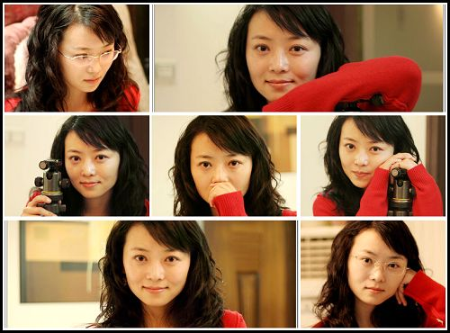
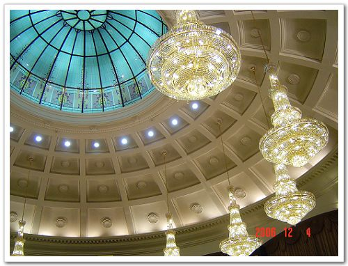
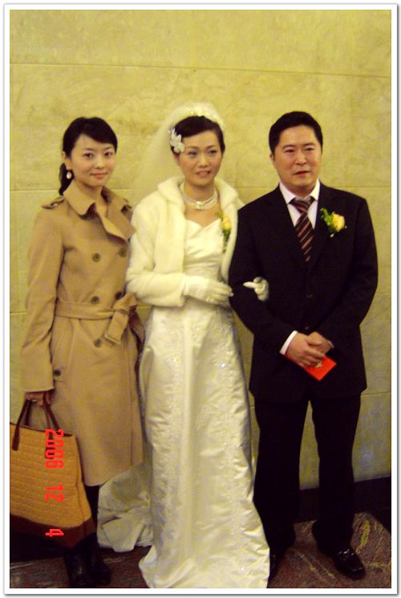
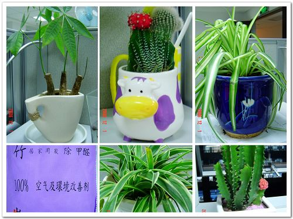

Archives : 2006-12
逝去 @ Dec 31, 2006
人们有一堆理由去按照自己的意愿行事，变幻莫测的人心。
无视社会现实原来是伪理论，每个人活得虚伪而理直气壮，与我们的伪生活一样没有深究的意义。无论精神或是物质都不如依赖自己来得舒畅，要建立对人性的信任总会艰难......大多数人为钱为利计较，那么我最计较什么？我把自己隔离得只剩下一个人，如一整年的尴尬，与工作上的好消息混杂出百般滋味。伤感，来自一年即将消逝的情绪，不过明天就是新年了......
2006年倒计时 @ Dec 30, 2006
2006年剩下最后两天，给自己拍了照片留念。
一周前一觉睡醒，左眼底出现血块，渐渐匀开变成血丝，现在还有点残留没消。上班时眼睛干涩、酸酸的，有时酸得流泪，也许空调吹的也许是装修后的余孽造成的？总之，这段时间我只能戴着眼镜度日。
傍晚外面下起小雨，温度徘徊在零度上下。寒冷的季节看完《SCOOP》，是Woody Allen与Scarlett Johansson 继人伦悲剧《MATCH POINT》之后再度携手合作，这会打的是浪漫喜剧的名号，Woody Allen居然在电影中也扮演角色，饰演一位魔术师，认真可爱而又唠叨的小老头。据介绍“这部新作几乎延续了《MATCH POINT》所有重要的元素，同样的伦敦，同样的女主角，甚至还有同样的谋杀，让人感觉就仿佛是一部《MATCH POINT》的‘灵异搞笑版’。伍迪艾伦的严肃面孔重新出镜和喜剧风格又让人看到了一丝昔日的‘伍氏风格’回归。熟悉伍迪·艾伦的人都清楚，他很喜欢连续拍摄两部类似的电影，一如当年的《安妮·霍尔》和《曼哈顿》，都是由戴安·基顿主演，都是讲述纽约，都是关于爱的故事。从这点上看影片还是有着依稀的‘伍迪·艾伦’标签，然后混入了浪漫、黑色幽默、奇幻等更加丰富的元素，而串起这些元素的最新‘伦女郎’是斯佳丽·约翰逊，《X-MEN》休·杰克曼的参与则让人非常意外。”欣赏Scarlett Johansson凹凸有致的身材，自然的性感，不做作，甚至有时还要掩饰她自己的性感，穿肥大的衣裳，保守的泳装，性感......应该就是自然流露，不刻意讨好，和气质一个概念吧？！《迷失东京》里的她很吸引我。
从下班回家到现在，一直泡在网络上，久违这种逍遥啦。每当夜晚来临我还是会莫名害怕，都是恐怖片惹得祸，时常还会自己吓自己。这时候我该洗澡睡觉，因为明天早晨项目组要开会。自从公司搬迁后，上班更加象是百米冲刺。今早上上高架前的十字路口和一辆马6并排等红灯，车里那人歪着头看了我几眼，绿灯亮时就听见那车哄隆隆地加着油门，我也不知道哪根筋突然冒出来真和人家飙上了，开到时速140，虽然后来赶超过去可还是郁闷，2.3排量起步就比2.0的快？记下那车的车牌明天也许会遇上。当时我要开着斯巴鲁翼豹会是什么情形呢？



失去联络的Tea&2006的终点 @ Dec 30, 2006
台湾地震海底光缆坏了，国内受影响，许多国际网站上不去，广播里说要两周时间才能恢复正常。Chinese Tea因此消失了几天，也许还会消失，天晓得......Tea上所有的连接也一同失去联系，看来blog已成为我生活的一部分。这两日把收藏夹里的blog一一点出来浏览，连blog上的连接也点了来看，是些南京写博的人，我好奇于生活在同一座城市里的其他人如何生活？看上去他们生活多姿多彩，物质丰富，但却没有发现符合我需要的文字。花朵般正在开放的年纪，那么灿烂的年华，却无一不受着环境影响，拖沓而迟疑，困惑又充满渴知的欲望，这也许就是南京这座城市的氛围？我也曾度过这样的阶段，却比现在快乐。
收到Angie邮寄给我Y3的背包和一张自制的明信片，背包很喜欢，笑纳。有意思的是shin制作的明信片，据说日本许多人会自己制作明信片送亲朋，值得借鉴的作法。上面基本上都是我在周庄和上海拍摄的照片，左下角袒露生殖器的小男孩是shin妹妹的孩子，有谁能象他那样挑衅我们的眼球？shin觉得有趣，他便占据了明信片的一角。我折起这个角将明信片摆放在办公桌上，顿时桌面和空气都开始温馨。反面印着shin居住在日本和上海的地址，上面是Angie&Shin的落款，右下角一只小野猪说着日本鸟语。
今年我没有邮寄出一张贺年卡和明信片，失去做这些事情的热情，同时也失去一整年说话的欲望！年底的时候总是会回忆过去，清晰记得去年最后一天的紫金山顶，一大群人步行上山，队伍中有只穿着雨衣的小猎狗，那群人站在山顶挥舞手中烟火朝着天空大声呐喊：“我要幸福”的场景仍然历历在目。一晃眼又是新年，日子快得似乎没有留下任何值得记忆的部分，去年的圣诞节、今年的五一和国庆想不起来都做了些什么，如一条没有变化的平行线，就这么活着。这一年极少参加团体活动，有点封闭吗？也没欲望知道别人在做什么，可以写下来的感想还有很多，懒得写了。有人问我：“2007年你想要什么？”我沉默了一会答非所问的回答：“去年我写了篇文章，2006年我要快乐...”明天是2006年最后一天，心里琢磨过几次，想着想着就烦了，随便怎么过都可以，失忆、失语......快乐状态！

对话 @ Dec 27, 2006
对话一
有人对我说：“你穿的那么时髦一点不象党员，还害怕疼不愿意献血，上班迟到，我印象中的党员应该是五大三粗的，你那么苗条......”
我：“难道党员是神，不是人？”
对话二
某人：“我们大学有全国最好的声学室。”
我：“声学系的人可以做啥？”
某人：“可以去搞音响制造，帮人家调音等等工作。”
我：“还能做什么？”
某人：“还能做外贸。”
哈哈哈哈~~
今天推荐阅读洪晃的《假天下里的真乳房》
The Fog @ Dec 26, 2006
昨天晚上收到橙色大雾警报的短信，南京今天依然是大雾天气。
打电话给妈妈让她尽量不要外出，比较危险。昨天晚上7点多钟我从公司下班出来，能见度大概只有5米不到，因为看不清路口还走错了路。开到新街口附近能见度在100米左右。晚上10点多从姐姐家出来，雾又变得很浓，想起恐怖片《The Fog》，还好，是一部可以忍受的恐怖片！早晨上班的路上，把所有车灯都打开了，大家也很自觉的缓慢行进。这种状况下谁若时速60的超车那简直就是畜生。上周集团另一家公司的老总出差的高速公路上突遇大雾，车停在路边等雾散去，结果被两辆大车给挤死了......车停下来，人坐在车里也死了，有人说那叫等死。如果下了车被撞死了，那叫找死！怎么着都是死。简直就是电影《死神来了》的翻版，死神要你死你怎么都逃不了！
2006下半年集团里接连出现三次交通事故，都是总经理级别的。一个在香港出的事故，44岁，千万身价，人却死在香港。这个老总56岁，在高速公路边上被两辆大车挤死在车内。另外一起事故是两个人在苏州某个停车场同时被车撞飞，一个是我们公司财务部经理，落在草地上。这位老总落在水泥地上，昏迷了好长时间。醒来之后只有4、5岁小孩的智力......一个字：霉！
今天不知明天事，每一天都要好好过~
圣诞.雾 @ Dec 25, 2006
今早上大雾，很浓很浓的雾。一早就收到我那温柔的姐姐的短信，告诉我下大雾了。上班路上开了双跳灯、远光灯和雾灯，上高架时前面几乎看不清楚是有车还是没车，十字路口的信号灯根本看不清楚，只能跟着前面的车灯走，这时候开车灯比较安全。没见交警指挥，大概只有出交通事故和罚款的时候，他们最带劲！周六晚上接到一个违停的罚单，NND~~大家在那条马路的南面停车，北面没有车停，结果还是被罚款。我冲到交警面前询问此事，人家酷酷地说那是违停。不过小交警长得蛮帅，有点象电影演员陈坤:P 就当50元停一次车了。
昨天晚上好些短信发过来祝福圣诞快乐，昨天下午上街车已经很难开了，到处都是人。据说晚上的正洪广场上起码有1000人挤在那里无所事事，那里有个大显示屏，许多人跟着央3台孙燕姿的《绿光》合唱，还有跟着摇摆的。到商店里挑了棵转动的1.2M高的能发光的圣诞树，待我挑完别的小东西转身取货时，那棵树已经被另一个营业员售出$#%%$&哎呀，生意就是这么好，最后只好买了一大一小两个花环回家，挂在墙上煞是别致，呵呵......昨晚石鼓路附近的教堂自然是灯火通明，被打扮得很有节日气氛，开车路过还不时回头多看几眼。
事实上，我对圣诞节没太多感觉，我想这不过是大家找个热闹的理由而已。
轿跑车 @ Dec 20, 2006
顾名思义，轿跑车就是轿车和跑车的结合体。轿跑车要具备轿车的大空间、舒适性高等实用功能，同时又要彰显出跑车超炫的外形、强劲的动力以及近乎完美的运动性能。从外形设计来说，轿跑车一般都是三门或五门掀背款，尾部设计介于两厢和三厢之间，简单来说就是轿车的车头加上跑车的车尾。从功能来说，轿跑车的独特定位有着不可替代性。轿跑车的靓丽外形、独特风格、超强动力都能在日常驾驶中满足车主对个性化的需求和运动激情的渴望。另一方面，轿跑车比纯粹的跑车更具实用性，充足的驾乘空间完全能满足车主对驾乘的要求。
欧宝astra雅特GTC：在南京街头看到欧宝三门掀背GTC，比周围的车明显低很多，也短一些，银灰色车型比较运动感，1.8at自动档舒适型，其价格为23.9万元，但是欧宝市场做的并不是太好，不过我还是很喜欢大气的车型！
雪铁龙C4：进口雪铁龙C4包括三款不同配置的车型，售价区间为21.98万元～24.98万元。4273/1769/1458mm，排量1587ml，2006年10月30日，雪铁龙公司在北京正式举行“新引力—雪铁龙C4媒体发布会”。欧洲兽价仅为1.5万欧元左右。NND~~这么便宜，国内不知道多少人可以买了。
奥迪A3 ：配备6挡手动变速箱的奥迪A3 1.8 TFSI基本型售价为23500欧元，约合人民币24.5万元，将于明年1月份正式上市。而1.8升TFSI汽油发动机在奥迪A3上的使用，代表着在动力性、燃油经济性和废气排放方面都具有优势的TFSI技术，从大排量发动机开始逐渐向小排量普及。
标致coupe 407：四个标准尺寸的座椅，后座除了头部空间略微低矮之外，其它部位的舒适感受和407轿车相比并无太大不同。当四个座位都坐满人之后，前后座乘客都能保证各自的舒适坐姿，这在跑车中是不多见的。4815毫米的车长，不是一款以性能取胜的跑车。
雷诺梅甘娜CC：一款双门硬顶敞篷跑车，外形上延续了雷诺不变的风格，售价在37万元，较低的定价正好可以用来打击标致307CC，标致307CC售价38.8万。梅甘娜CC和标志307CC在车型上都相差无几，想要取得好的销售定价也就成了最大的关键，梅甘娜CC以一个较低的姿态进入市场，这样也可以起到一个吸引眼球的作用。
《满城尽带黄金甲》观后感 @ Dec 20, 2006
昨天在华纳影城看了新上映的《满城尽带黄金甲》，每周二、三所有电影均半价。一下班就赶过去买票，18：35最早的一场已经卖完，后面几场只剩最前面和后面旁边的座位，不得已买了20：30分第5排中间座位的票，30元。为了看这场电影等了两小时，进了电影院发现第一排也已经坐满。张艺谋的《英雄》、《十面埋伏》我都是到电影院看的，对当晚看这部电影并未报很多幻想，电影播放过程却是我在心里一点点给予这部戏肯定的过程，说它是中国电影的一部上乘之作，甚至是屈指可数的好电影之一都是恰如其分的。特希望中国能多出这样的好导演好剧本好电影，多出好演员。每个有点爱国心的中国人，绝不会出现了什么好作品好演员就自己人嘌自己人。
我印象特别深刻的表演是刘烨饰演的元祥得知皇后要谋反的事情冲到皇后宫中的那场戏。刘烨的表演功底非同寻常，这是周围很多人喜欢他的主要原因。
巩俐饰演皇后，我觉得她的表演缺那么点儿，游刃有余的同时再多些底蕴的积淀就更饱满了。可是很多事情都是无奈的，有人就是那么走运，并且一直走运下去。渐渐的自己也得到了发展。
周润发饰大王，以禁军都尉身份，领兵造反．自立为王。为巩固权力。他逐前妻，迎娶梁国公主(巩俐饰）为后．从而得到梁王支持，稳定了政权。当各媒体电视台主持人相尽模仿港台口音的时代，通过这部电影我第一次感悟我们大陆的普通话真好。一个人的口音、声调、语速是魅力不可缺少的部分，尤其对于演员来讲，就更是不可缺少的表演因素之一了。说实话我并不欣赏周润发的表演，国内有一些中老年男演员的演技就很好。不过商业电影总要考虑到票房，也是无奈的事。
周杰伦饰演二王子元杰。选用他演这个角色肯定是出于票房。他穿着铠甲的形象怎么都与周星驰装扮的齐天大圣相似。表演戏份并不多，总是展示着那张毫无表情的面孔。不知道是口音问题还是声带问题，普通话发音短促而平淡。不过借着这部电影他的MV肯定要火起来了。
我现在满脑子还是电影中的丰胸和金黄色，接下来的时尚潮流是否会以“胖”为美了呢？电影启用的新谋女郎李曼饰演的蒋婵非常可爱妩媚，这个演员才17岁哦，希望她前途无量！
有人说张艺谋更好的学习了西方电影手法，场面大、画面细，无论怎样这都是一部值得去电影院看的中国巨作！
美国版《无间道》--The Departed @ Dec 19, 2006

昨天晚上看了美国版的《The Departed》，比港产的烂。剧情不紧凑之外，还有印象先入为主的原因，总是不自觉地拿它和港产的《无间道》比较。《The Departed》改编自刘伟强、麦兆辉导演的港片《无间道》，故事大纲与原作相似，根据寰亚和华纳的合约规定，除了支付1750万美元的版权费用外，寰亚将拥有该片在内地和港台地区的永久版权，所以这部电影的字幕也会标明寰亚是该片的出品方之一，只是结尾略有不同，并且警察内部知晓卧底身份的不是一个而是两个人，只是活着的那个知情者却在需要的时候没出现，最后等Billy Costigan被杀后才出来一枪解决了在警察卧底的Colin Sullivan，有点牵强。
Leonardo DiCaprio饰演的Billy Costigan我觉得还是很精彩的，现在的他体型比过去要魁梧一些，不再是那种油头粉面的奶油小生形象，表演成熟多了。Matt Damon的表演也不逊色，比起刘德华我更喜欢Matt Damon的表演，刘德华一直给我的印象是表演痕迹太重。
年终总结 @ Dec 18, 2006
下班前交了工作总结，也许大多数人会当作命题作文去写，但是我决定写出真实感受。毕竟对于每位职工来讲这是一次说话并有人倾听的机会。这样想，是否显得我过于天真？我欣赏那些劳逸结合既会工作又热情生活的人，工作狂、伪工作狂我都不是很喜欢。如果没有原因而懈怠工作，娱乐与工作不分主次的家伙也是要评判的！工作就是分工协作，各厮其职，有些自我膨胀的家伙要么是公司提供的氛围，要么是人品问题，要么就是井底之蛙。象我们这样的公司也不过是沧海一粟，更何况一个人的能力呢？有见过一个人玩篮球的吗？
二八年华 @ Dec 17, 2006

下午 和Sherry在东郊拍了一些照片，气温明显降低，风呼呼地吹，落叶缤纷啊。她最近对清朝历史感兴趣，还买了《百家讲坛》来阅读。除了工作、上法语课，几乎大门不出二门不迈的在家研究历史。能体会到她内心的某些东西，也曾经历二八年华。一路上我们窃窃私语，没有边际地聊天，轻松而自在。大多女子到了这个年纪会照葫芦画瓢的嫁人生育，貌似幸福的生活，可她却渐渐安静。有人若说自己心如止水，一般意味着什么？发现大龄单身的女性，思想都比较独立，对生活有自己的主见。其实她们的内心更为理想而感性，未必比过着"幸福生活"的人们麻木现实。
说到《百家讲坛》，晚上的电视居然偶遇到这个节目正在播出，饶有兴趣看了会，这集是中国人民大学国学院副教授讲李世民如何谋取太子地位，的确精彩，值得继续关注。
今天演出结束 @ Dec 16, 2006
我们公司的MM还是很可爱滴~~发现偶们公司PL的女孩子不少哦！在后台化妆间我帮她们拍摄了很多照片 ，遗憾的是我自己的没拍几张:\这个舞蹈将近7分钟，我们截到5'27"排练了两个月，有的女孩子刚来时驼背哈腰，现在在舞台上已经挺拔多了。看着这身打扮就知道那是悍妇们的舞蹈，每次跳完之后犹如长跑之后的感觉，由衷佩服那些草原上的姑娘！排这个舞蹈的导演还真能抓住关键特点，满场跳啊跑啊，那个奔放啊~~音乐伴奏里又是口哨又是女孩子发嗲的声音，鼓点节奏快，动作一个接一个......那速度真把偶们累坏了！不过舞蹈效果非常好，气氛也好，想不留印象也难。偶还找人拍摄了DV。有时真是麻烦，要带相机还要拿着DV，双枪老太婆咯？！￥#^*—%


Who cares the performance？ @ Dec 13, 2006
周末要演出了，排练了将近两个月时间，每天除了烦还有大量的流汗。锻炼身体需要毅力，还需要有人在后面监督才能坚持下来。打算用DV拍摄演出过程，可是找了两个同事不是客人来要出差就是不确定，换作是我，单位开会演出的下午我可能也不会去的。想想这些不过是在领导那里混个脸熟？！是功利之人在领导那里表现能力的机会，我们嘛......不过是某些人手上的工具罢了。Who cares the performance？
Bridget Jones's Diary @ Dec 11, 2006
“Bridget Jones's Diary”tells of thiryish English officeworker who is plumpish klutzy,and unsure of herself but dawntlessly playing the mating game in spite of her imperfections.
《Bridget Jones's Diary》共有两部，2001年发行的第一部，2004年第二部。看完第一部之后禁不住想继续看第二部，一口气看完两部《Bridget Jones's Diary》，两部戏一直沿用三位男女主角，不是什么浪漫爱情故事，也不是唯美主义的误导，剧中女主角也不是漂亮女人......很真实，带点轻喜剧色彩，芮妮.齐薇格把这个英国单身大龄女性角色演绎的傻气而可爱，不对感情气馁，积极生活，第二部中她和马克的爱情出现了问题，爱情并不是一帆风顺的......这部电影值得推荐一下！

芮妮.齐薇格 （Renee Zellweger），休.格兰特 （Hugh Grant）和科林.弗思 （Colin Firth）主演的《Bridget Jones's Diary》，讲述发生在英国伦敦单身男女的故事。家住在伦敦西区的32岁的女主人公布里奇特·琼斯（Renee Zellweger）是一位在出版社工作的单身女子，工作平淡无奇，她没什么野心和抱负，唯一的愿望就是能减轻体重以及寻找到一份真正的爱情，可这些对她来说依然是那么遥不可及--琼斯的感情生活似乎永远是危机四伏，男朋友换了几个，总也找不到跟自己合拍的人。渐渐地故事开始发生了，两个和她发生感情的男人：一个是像小说人物一样完美的丹尼尔·克里弗（休·格兰特）；另一个是一身毛病但很真实的马克·达西（科林·菲尔斯）。这两个人的出现叫琼斯又欣喜又发愁，她思前想后也拿不准自己该挑哪一个。看来，新的生活中依然有不少麻烦陪伴着琼斯，不过她却乐在其中呢......
童话般的爱情，胡扯 @ Dec 08, 2006
Yucheng 说:记得有个知名主持人采访她，说这个电影里（《一个陌生女人的来信》》）的女人如何悲哀，她说不觉得啊，就是觉得这个电影里面最可悲的就是姜文演的那个男人从来没有真正爱过。
Christina说:那角色让我想到《飘》里的的郝斯嘉
Yucheng 说:而女主人公反而对自己最真实的，想爱就爱，不想爱就不爱，而且是那种我爱你与你无关的。从此，我就彻底爱上徐静蕾了。
Yucheng 说:前几天的晨报也有意思，别人说她在伤城里面做花瓶。她笑死，说年轻的时候听人说她是花瓶，不开心，因为觉得自己是有内容的，有学识的。到了30岁，听到有人说她是花瓶，那就是对她外貌的肯定了。。。智慧伐?当然，主要还是自信
Christina说:她的心理状态已经凌驾于这些言语之上了
Yucheng 说:是的，她很大气，不争不吵
Christina说:应该也会有小女人的一面吧?
Yucheng 说:这是肯定的
Christina说:可我觉得她有那么丁点做作
Yucheng 说:没有的，是她有点放不开
这段对话在我看完：《不介意被称花瓶 徐静蕾：童话般的爱情，胡扯》 之后：
......徐静蕾在博客上以“老徐”自称，尽管没有人觉得她徐娘半老，可是她却总爱“倚老卖老”。
对即将接拍的电影《刺马》，导演陈可辛形容徐静蕾与刘德华之间的爱情是一段“童话般的爱情”。关于究竟是不是这部电影的女主角，徐静蕾还是不置可否，但她对“童话般的爱情”发表了一些见解。
过了30岁的徐静蕾与王朔、张亚东、韩寒等不同年纪的男人传出过绯闻，她自认有了一些阅历，对爱情有更深的理解，不愿意相信所谓“童话般完美的爱情”，“每天过好了，把眼前的做好了，这个就是最实际的，我经常听男朋友对女朋友说，我现在虽然怎么怎么……我将来会对你怎么怎么好。我觉得这个是最胡扯的！现在都这样，你将来还会怎么样？”
惊人 @ Dec 08, 2006
有的人为什么小到不起眼的事情也会撒谎，语速上表明根本没经过大脑就脱口而出了，接着又是一个谎话，前后不超过一小时。是习惯问题还是人品问题？在我和朋友看来这两件事情根本不需要撒谎，类似别人问你吃过了吗，你明明吃过了但是面对一闲聊的、无关轻重的人你却回答没吃过，这心理匪夷所思的境界是我等俗世之人无法理解的。相从心生，不知道时间长了会是什么面相？

恋爱的权利 @ Dec 07, 2006
本来很熟络的朋友，一谈恋爱见着面连个微笑都找不到......恋爱等于霸占对方的所有吗？包括对方的意志和社交圈？
白开水的味道 @ Dec 06, 2006
不再多愁善感，不再忧郁，有点白开水的味道，这种状态我喜欢。
周末去了东郊，那天似乎比平时更冷些，手指和皮肤冻得皱起来，鼻头红红的。从灵谷寺走过水榭到达音乐台，然后折回，这段路走得平静而轻快。音乐台多了许多白色鸽子，让我想起米兰的杜奥姆广场上的灰色鸽子，不同的是这里的鸽子不敢靠近人，只是拣食游人散落在地上的食物。而米兰广场上的鸽子会飞落在你的肩膀上，或着停留在你的手腕上吃食。这个时候的郊外很难寻到茂密的银杏树，草地上铺满各式的落叶。某个回家的夜晚，骤然发现小区后门马路边有一排处于青少年时期的银杏树，在路灯下泛着柔和的暖黄色，特别美。原来家门口就是风景啊：）
时间SO快 @ Dec 05, 2006
尤其喜欢下班后的办公室，很安静。
这段时间总感觉自己忙忙碌碌的，本着锻炼身体的目的参加这次舞蹈排练，可是每天休息的时间少了，不过蛮喜欢这支舞蹈，动作优美，气氛也好。
连着两次在苏宁环球参加两个钻石王老五的婚礼，除了同事的外，另一个38岁，新娘过了今年24。多年知己朋友的一次庆祝，庆祝当天他们领了神圣的红本本。当朋友拿起新娘子的手给我们看那上面的钻戒时，这位上海新娘说：“好意思给人家看呢，这么小~~”第一次接触还真是留下印象了呢，朋友等前女友12年，结果新郎不是他。婚姻象是写记叙文......
每天工作时间缩短后，感觉在公司呆不了多长时间就到下班时间了，晚饭后很快就是睡眠时间，NND，时间过得飞快，根本来不及感受就过去了，做什么都是一样。
同事的婚礼 @ Dec 05, 2006
海归同事的婚礼在苏宁环球的卢浮宫举行，据说这家酒店一天只能办一个婚礼，预订从一年前就开始订满了，所以他只能订在12月“4”号举行，对于中国人来讲“4”这个数字不太吉利，不过这是迷信，信则有不信则无！同事的感谢辞中，最后一句：“感谢这个女人”印象颇为深刻！



BlogBus四周年庆典 @ Dec 04, 2006
4年= 48个月=1460日
这么不知不觉．．．
BlogBus已经乘载着众多乘客行驶了那么远那么久
BlogBus没有司机乘客却很多
BlogBus没有方向盘用键盘就可以操作
BlogBus没有指定路线但每个人却能够记录和分享人生旅途中的风景
BlogBus让我们一起走得更远更久．．．
开向未来的BlogBus决定这个生日派对一定要搞搞大，那么．．．
时间：2006年12月9日
地点：上海市龙华路2577号5号楼、72号仓库
人物：BlogBus用户和特邀嘉宾
事件：和BlogBus的第一次亲密接触、晚餐会暨颁奖晚会
我受到邀请，也会去，那几天虎子正好在上海演出，晚上有的事做了。除了见好朋友还想见到yucheng，这个我只见过一次面的女孩子：）
初冬 @ Dec 03, 2006


照片后上传到相册~~
与甲醛亲密接触 @ Dec 01, 2006
办公室里的植物有史以来最多的时期，呵呵~~看着这么多绿色植物，上班心情也会好许多。这个周末的南京终于放晴了，有时间一定去郊外拍些照片：）周末愉快！

